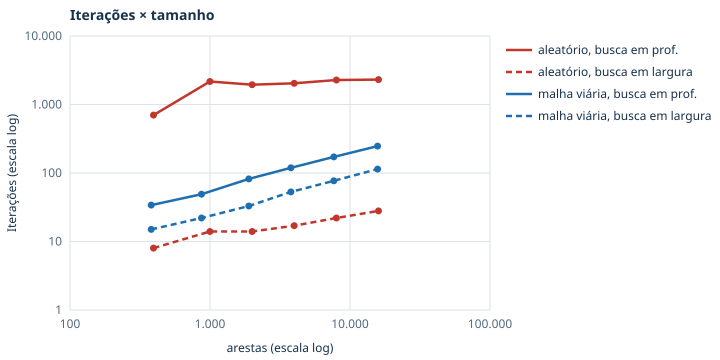
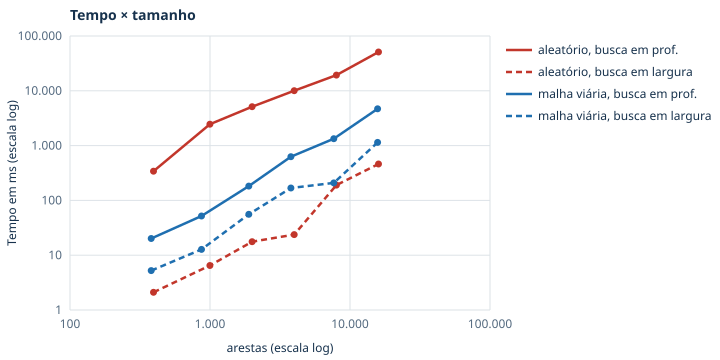

Teoria dos Grafos — Tema 7: Fluxo em Grafos
Relatório técnico
Integrantes
Repositório: fluxo (Git) · Novembro de 2026
O projeto é uma aplicação web que calcula quantos caminhões de doações por dia conseguem chegar aos abrigos durante uma enchente e qual conjunto de estradas limita essa entrega. O algoritmo obrigatório do tema, Ford-Fulkerson, foi implementado pelo grupo em PHP (servidor) e em TypeScript (navegador), sem bibliotecas de grafos. Integrantes: Guilherme Travain Borges, Lucas Bucci Borges, Vinicius Golçalves Trabuco, Kaue de Alcatara Ribeiro, Eduardo Martins e Gabriel Gebra.
Em maio de 2024, a enchente do Rio Grande do Sul bloqueou rodovias em vários pontos. Houve deslizamentos na serra, pontes caíram no Vale do Taquari e os acessos a Porto Alegre e a Eldorado do Sul ficaram alagados. Ao mesmo tempo, chegavam doações de todo o estado e de Santa Catarina, que precisavam chegar a abrigos com capacidade limitada de receber e distribuir. A pergunta de logística é: com as estradas que sobraram, quantos caminhões por dia conseguem chegar aos abrigos, e qual é o gargalo? Saber o gargalo indica onde uma obra emergencial, um desvio ou um abrigo novo trazem mais ganho.
Esse é exatamente o problema do fluxo máximo. O teorema do fluxo máximo / corte mínimo mostra o gargalo como o conjunto de estradas (ou abrigos) de menor capacidade total que separa as doações dos abrigos. Numa rede com dezenas de cidades e trechos, achar esse valor à mão é impraticável. Nas redes sintéticas de milhares de vértices, também usadas nos testes, é impossível.
| Instância | Vértices | Arestas | Origem | Limitações |
|---|---|---|---|---|
| enchente_rs e 3 variações | 11 | 17 | Cidades reais; capacidades ilustrativas definidas pelo grupo | Rede reduzida, feita para explicar o método passo a passo |
| rs_rodovias | 35 | 57 | 33 cidades do RS e 44 trechos de rodovias federais e estaduais, listados pelo grupo e gerados por scripts/build_rs_rodovias.php | Trechos, faixas e estado das vias são estimativas do grupo, não conferidas com dados oficiais |
| malha_bairro_pequeno, malha_cidade_40x60 | 50 / 2.402 | 176 / 9.480 | Gerador próprio de malha viária (ruas de mão dupla, avenidas mais largas), semente fixa | Sintéticas |
| aleatorio_300 e geradas na tela | até 50.000 | — | Gerador de grafo aleatório (grau e capacidade máxima escolhidos), semente fixa | Sintéticas |
| cormen, patologico, sem_caminho | 4–6 | 2–9 | Exemplos de livro-texto e casos de fronteira | Usadas para verificar a correção |
Capacidade da malha do RS. Para cada trecho, o grupo registrou a rodovia, o número de faixas por sentido e o estado
da via no cenário. A capacidade em caminhões de doação por dia é
faixas × 150 × fator, com fator 1 para via liberada, 0,5 para via parcial (pare-e-siga, desvio, uma faixa) e 0 para via interditada.
A capacidade de cada abrigo (quantos caminhões por dia consegue descarregar) também foi estimada: Porto Alegre 500, Canoas 300,
São Leopoldo 200, Novo Hamburgo 150, Lajeado 150 e Eldorado do Sul 100. Os estados das vias seguem os tipos de bloqueio
noticiados em maio de 2024, mas não são registros oficiais. O valor de 150 caminhões/dia por faixa é uma parcela
conservadora da capacidade da via, reservada para a ajuda humanitária. Todo o cálculo está no script, que pode ser alterado e rodado de novo.
Formato. As instâncias são arquivos JSON em database/data/, com vertices
(id, papel, coordenadas para o desenho) e edges (from, to, capacity, com "inf" para ∞).
Pela interface, o usuário pode criar, editar, salvar e excluir redes, e também gerar redes de qualquer tamanho.
| Elemento | Significado |
|---|---|
| Vértice | Cidade: ponto de entrada de doações, cidade de passagem ou cidade com abrigo |
| Aresta (u, v) | Trecho de rodovia que leva doações de u para v |
| Capacidade c(u, v) | Caminhões de doação por dia que o trecho suporta; 0 = interditado |
| Super-origem S* | Representa todos os pontos de entrada de doações (arestas S* → centro com capacidade ∞) |
| Super-destino T* | Representa todos os abrigos; a aresta abrigo → T* tem a capacidade de recebimento do abrigo |
| Fluxo f(u, v) | Caminhões por dia que efetivamente usam o trecho na solução |
O grafo é direcionado e ponderado, e o peso de cada aresta é a sua capacidade. Hipóteses adotadas:
Restrições da rede de fluxo, conferidas automaticamente:
Arestas antiparalelas (u → v e v → u, como nas ruas de mão dupla das malhas) são aceitas pela implementação, porque cada aresta tem a sua própria reversa residual. A interface também oferece a transformação clássica com um vértice auxiliar v'.
O método de Ford-Fulkerson (1956) começa com fluxo zero e, enquanto existir um caminho aumentante de s a t na rede residual, envia por ele a maior quantidade possível. A rede residual tem, para cada aresta (u, v), a capacidade que ainda sobra, c − f, no sentido direto e a quantidade f, que pode ser desfeita, no sentido inverso.
FORD-FULKERSON(G, s, t)
para cada aresta (u,v): f(u,v) ← 0
enquanto existe caminho p de s a t na rede residual G_f ▹ 1º passo
c ← min{ c_f(u,v) : (u,v) em p } ▹ 2º passo (gargalo)
para cada (u,v) em p: ▹ 3º passo
c_f(u,v) ← c_f(u,v) − c ; c_f(v,u) ← c_f(v,u) + c
retorne f
Escolha do caminho. O método permite qualquer caminho aumentante. O projeto usa busca em profundidade (iterativa, visitando os vizinhos na ordem de inserção), que é a forma mais direta do método original. Apenas para a análise experimental, a mesma implementação aceita busca em largura no 1º passo, o que corresponde à variante de Edmonds-Karp (caminho com menos arestas). Os passos 2 e 3, a rede residual e o corte mínimo são os mesmos.
Corretude. Quando não existe mais caminho aumentante, o conjunto S dos vértices alcançáveis a partir de s na rede residual define um corte (S, T) cujas arestas estão todas saturadas. Pelo teorema do fluxo máximo / corte mínimo, |f| = c(S, T), e portanto f é máximo. A aplicação calcula esse corte e o mostra como o gargalo da rede.
Complexidade. Com capacidades inteiras, cada iteração aumenta o fluxo em pelo menos 1, e cada busca custa O(V + E). O total é O(E · |f*|), onde |f*| é o valor do fluxo máximo, ou seja, depende das capacidades e não só do tamanho do grafo. Com busca em largura, o número de iterações é O(V · E), e o total fica O(V · E²), independente das capacidades. A seção 8 confirma essa diferença na prática.
Fluxo ilimitado. Se existir um caminho só com capacidades ∞, o gargalo é ∞ e o fluxo não tem limite. A implementação detecta esse caso e avisa, em vez de entrar em laço infinito.
| Camada | Arquivo | Responsabilidade |
|---|---|---|
| Algoritmo (PHP) | api/app/Services/FordFulkerson.php | Ford-Fulkerson, busca do caminho, gargalo, atualização, corte mínimo |
| Rede residual | api/app/Services/FlowNetwork.php | Arrays paralelos: aresta original 2i, reversa 2i+1 (gêmea = e XOR 1); residual = cap − flow |
| Verificação | api/app/Validators/Validation.php | Capacidade, conservação, valor e certificado fluxo = corte |
| Dados | InstanceIO.php, InstanceRepository.php, Generator.php | JSON ↔ rede, gravação segura, geração de malhas e grafos aleatórios |
| API | api/solve.php, instances.php, generate.php | Endpoints HTTP JSON |
| Algoritmo (TS) | src/utils/fordFulkerson.ts | Mesmo algoritmo e mesma ordem de visita; reconstrói cada iteração para o passo a passo |
| Interface | src/pages/HomePage.tsx, src/components/* | Desenho (Cytoscape.js), painel de passos, cortes, editor, testes em escala |
O servidor e o navegador produzem os mesmos caminhos aumentantes. A cada execução, a interface compara os dois resultados e avisa se houver diferença. Se o servidor PHP cair durante a demonstração, o cálculo continua no navegador. Bibliotecas usadas (todas auxiliares): React e Vite (interface), Cytoscape.js (apenas desenho do grafo), fontes Barlow e, na preparação de dados em Python, OSMnx e NetworkX. Nenhuma biblioteca de grafos é usada para calcular o fluxo.
| Categoria | Casos | Verificação |
|---|---|---|
| Simples com resultado conhecido | Exemplo do Cormen (23); aresta única; cenários da enchente (24, 15, 27, 19) | Valor esperado e caminhos iguais aos calculados à mão |
| Sem solução | sem_caminho (s e t desconectados) | Fluxo 0, nenhuma iteração, corte vazio |
| Fronteira | Capacidade 0; capacidade negativa; origem = destino; capacidades ∞ (fluxo ilimitado); arestas paralelas e antiparalelas; rótulos numéricos | Rejeição com mensagem clara ou valor correto |
| Patológico | Rede com aresta de capacidade 1 no meio de capacidades 1000 | Valor 2000; comparação de iterações entre buscas |
| Aleatórios | 30 grafos com sementes 1–30 (23 a 110 vértices) | Validação completa e mesmo valor nas duas buscas |
| Escala | Malhas e grafos aleatórios de 100 a 4.000 vértices; malha de 2.402 vértices | Validação completa; tempo (mediana de 3 execuções) |
| Consistência PHP × TS | Todas as instâncias de database/data | Fluxo = corte mínimo; mesmos caminhos no Cormen |
A validação (Validation.php) confere, para todo resultado: 0 ≤ f ≤ c em cada aresta; conservação em cada
vértice intermediário; saída líquida de s = entrada líquida em t = valor; t inalcançável na rede residual final; e capacidade do
corte = valor do fluxo. Comandos: php api/tests/run.php (47 testes) e npm test (26 testes), todos passando.
O benchmark é reproduzido com php scripts/benchmark.php, e os gráficos com php docs/gerar_graficos.php.
| Cenário | Fluxo máximo (caminhões/dia) | Gargalo (corte mínimo) |
|---|---|---|
| Situação atual | 24 | Saídas de Novo Hamburgo, Caxias → Gravataí, Santa Cruz → Porto Alegre |
| Ponte interditada (Caxias → Novo Hamburgo = 0) | 15 | Saídas de Caxias e de Santa Cruz |
| Nova rota liberada (Novo Hamburgo → São Leopoldo 4 → 8) | 27 | Saídas de Caxias e de Santa Cruz |
| Abrigos lotados | 19 | Os próprios abrigos de Porto Alegre e Canoas |
| Malha rodoviária do RS | 775 | Ver 8.2 |
Perder uma ponte reduz a entrega em 37,5% (24 → 15). Dobrar uma única rota bem escolhida aumenta 12,5% (24 → 27). Quando os abrigos não dão conta de descarregar, abrir estradas não adianta, porque o gargalo passa a ser o próprio abrigo. Essa é a leitura prática do corte mínimo: ele indica onde investir.
Na rede de 33 cidades, o fluxo máximo é de 775 caminhões/dia (12 iterações com busca em profundidade, 8 com busca em largura). O corte mínimo tem 8 arestas:
Ou seja, o que limita a ajuda nesse cenário não são os acessos finais a Porto Alegre, mas a entrada na região metropolitana pela serra e pelo vale. Testamos liberar totalmente (75 → 150) cada trecho parcial. Na BR-386 Soledade → Lajeado, na BR-116 Caxias → Nova Petrópolis, na RS-122 e na RS-287, o fluxo sobe de 775 para 850. Na BR-470, liberar só Lagoa Vermelha → Bento Gonçalves não muda nada, porque o trecho seguinte (Bento → Montenegro) também é parcial e vira o novo gargalo. Isso mostra que o corte mínimo pode mudar de lugar. O que vem do sul (Pelotas, Camaquã) só chega a Eldorado do Sul, porque a ponte do Guaíba está interditada.
Tempos medidos no PHP 7.4 (CLI, Windows 11). Cada valor é a mediana de 3 execuções. Todos os resultados passaram na validação automática.
| Rede | Vértices | Arestas | Fluxo máx. | Iterações (prof.) | Tempo (prof.) | Iterações (largura) | Tempo (largura) |
|---|---|---|---|---|---|---|---|
| enchente_rs | 11 | 17 | 24 | 7 | 0,14 ms | 6 | 0,08 ms |
| rs_rodovias | 35 | 57 | 775 | 12 | 0,58 ms | 8 | 0,23 ms |
| patologico | 4 | 5 | 2.000 | 4 | 0,04 ms | 2 | 0,02 ms |
| sem_caminho | 4 | 2 | 0 | 0 | 0,01 ms | 0 | 0,00 ms |
| aleatorio_300 | 300 | 898 | 172 | 169 | 71 ms | 17 | 4 ms |
| malha_cidade_40x60 | 2.402 | 9.480 | 43.200 | 140 | 737 ms | 70 | 777 ms |
| aleatorio_100 | 100 | 395 | 1.299 | 700 | 341 ms | 8 | 2 ms |
| aleatorio_500 | 500 | 1.999 | 1.961 | 1.948 | 5,1 s | 14 | 18 ms |
| aleatorio_1000 | 1.000 | 3.996 | 2.162 | 2.040 | 10,0 s | 17 | 24 ms |
| aleatorio_2000 | 2.000 | 7.998 | 2.384 | 2.282 | 19,3 s | 22 | 190 ms |
| aleatorio_4000 | 4.000 | 15.992 | 2.310 | 2.310 | 51,0 s | 28 | 461 ms |
| malha_10x10 | 102 | 380 | 12.600 | 34 | 20 ms | 15 | 5 ms |
| malha_22x22 | 486 | 1.892 | 26.100 | 82 | 183 ms | 33 | 56 ms |
| malha_44x44 | 1.938 | 7.656 | 52.800 | 172 | 1,3 s | 77 | 209 ms |
| malha_63x63 | 3.971 | 15.750 | 75.600 | 247 | 4,7 s | 114 | 1,1 s |


patologico pode levar 2.000 iterações se o caminho usar a aresta central de capacidade 1.
Com a ordem de visita do projeto, a busca em profundidade não cai nessa armadilha (4 iterações), mas os grafos aleatórios
mostram que o problema de fundo existe.osm_loader.py), mas a instância precisa ser gerada com internet.Decisões de implementação. Os dados ficam em arrays paralelos, e não em objetos, por desempenho. A reversa de cada aresta é e XOR 1. A busca em profundidade é iterativa para não estourar a pilha em malhas grandes. O algoritmo foi feito em duas linguagens, com a mesma ordem de visita, para o passo a passo ser instantâneo e conferido pelo servidor. Não há banco de dados, para a aplicação rodar em qualquer máquina com PHP e Node.
O trabalho foi dividido por partes do projeto. Todos participaram das discussões sobre o problema e a modelagem, e todos estudaram o código para conseguir explicá-lo.
| Integrante | Contribuição |
|---|---|
| Guilherme Travain Borges | Organização e manutenção do repositório no GitHub: reuniu o código produzido pelo grupo e fez os commits (por isso o histórico está em seu nome). Estrutura da aplicação, API em PHP e preparação do ambiente para a demonstração. |
| Lucas Bucci Borges | Implementação do método de Ford-Fulkerson e da rede residual (FordFulkerson.php, FlowNetwork.php)
e do cálculo do corte mínimo. |
| Vinicius Golçalves Trabuco | Interface em React: desenho do grafo, passo a passo das iterações, editor de redes e tela de testes em escala. |
| Kaue de Alcatara Ribeiro | Modelagem do problema e dados: cenários da enchente, pesquisa das rodovias e montagem da malha rodoviária do RS. |
| Eduardo Martins | Testes e validação (Validation.php, testes em PHP e TypeScript), benchmark e análise dos resultados. |
| Gabriel Gebra | Relatório técnico, slides da apresentação e levantamento das referências. |
Papel da IA. As ferramentas de IA foram usadas como apoio ao trabalho do grupo, e não para fazer o projeto inteiro. Nenhuma parte foi incluída sem passar pelo grupo. Os integrantes:
Ferramentas utilizadas:
| Etapa | Onde o Claude ajudou |
|---|---|
| Revisão | Comparação do projeto com o enunciado e com os critérios de avaliação, e lista do que faltava |
| Código | Tela "Testes em escala" (ScalePanel.tsx); opção de busca em largura em FordFulkerson.php e os testes dela;
script da malha rodoviária (build_rs_rodovias.php); nova versão do benchmark.php; gerar_graficos.php |
| Dados | Primeira versão da lista de cidades, rodovias, faixas e estados das vias da malha do RS |
| Textos | Seções do README (modelagem, origem dos dados, limitações) e rascunho deste relatório |
Revisão e validação. Todo código feito com ajuda das ferramentas foi lido e revisado pelo grupo e passou pelos testes automáticos (47 testes em PHP e 26 em TypeScript). Todo resultado numérico deste relatório foi produzido pelo próprio programa e conferido pela validação automática (capacidade, conservação e fluxo = corte mínimo). As rodovias, faixas e estados das vias da malha do RS são estimativas do grupo e não foram conferidos com dados oficiais; essa é uma das limitações do trabalho (seção 9). O grupo revisou os textos e se responsabiliza por eles, e todos os integrantes estudaram o código para conseguir explicá-lo.